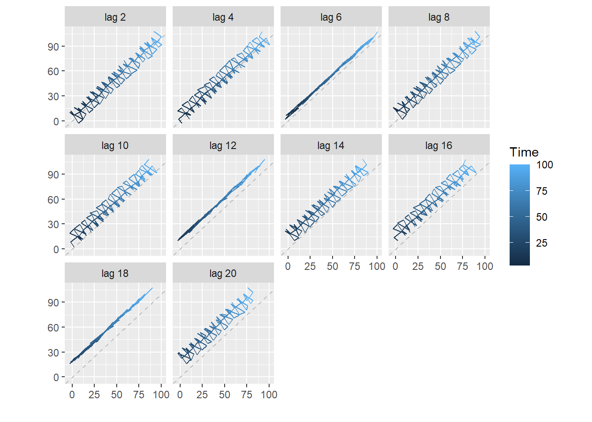
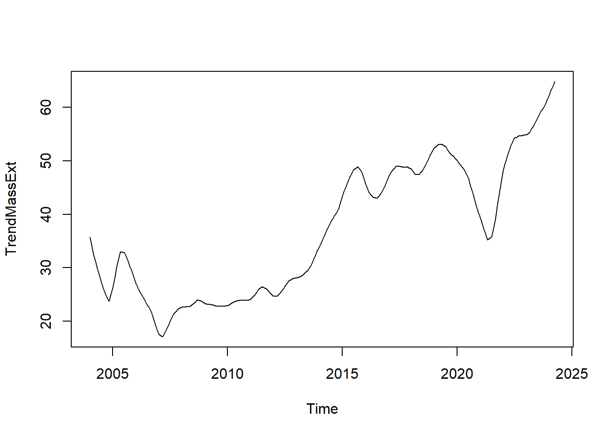
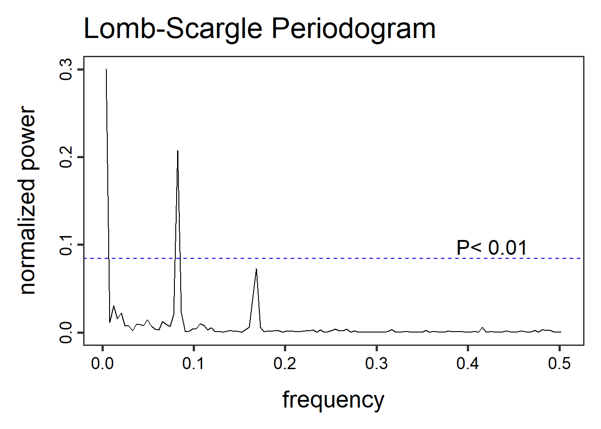
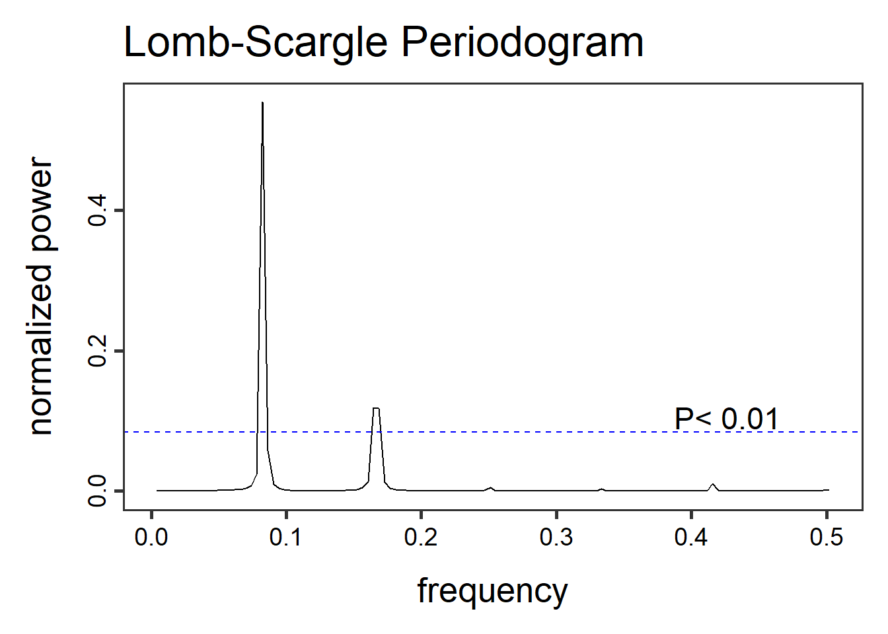
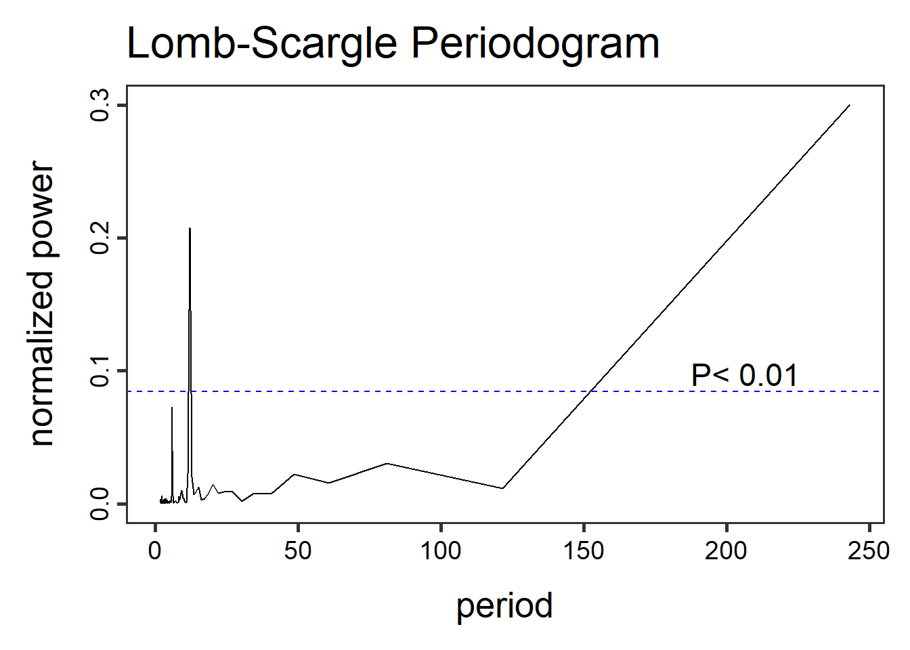
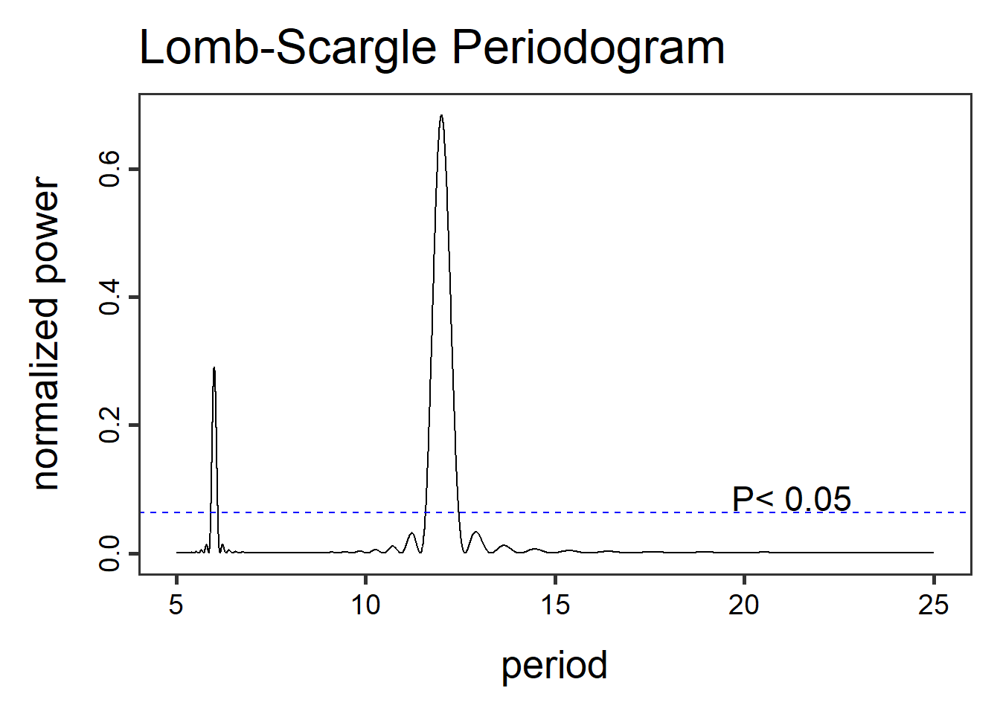
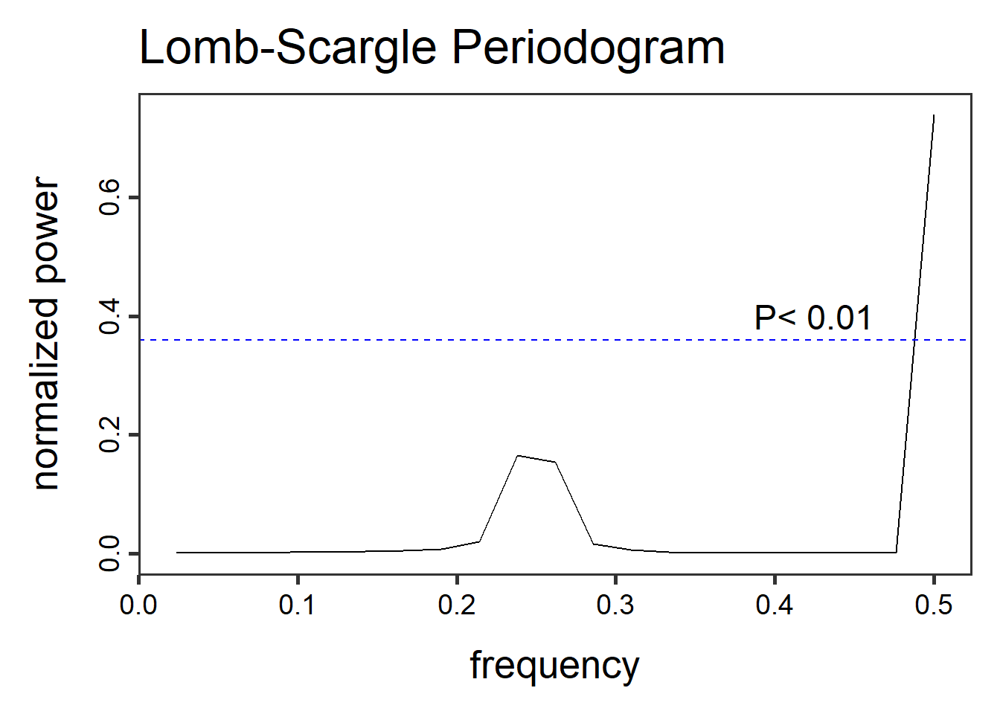
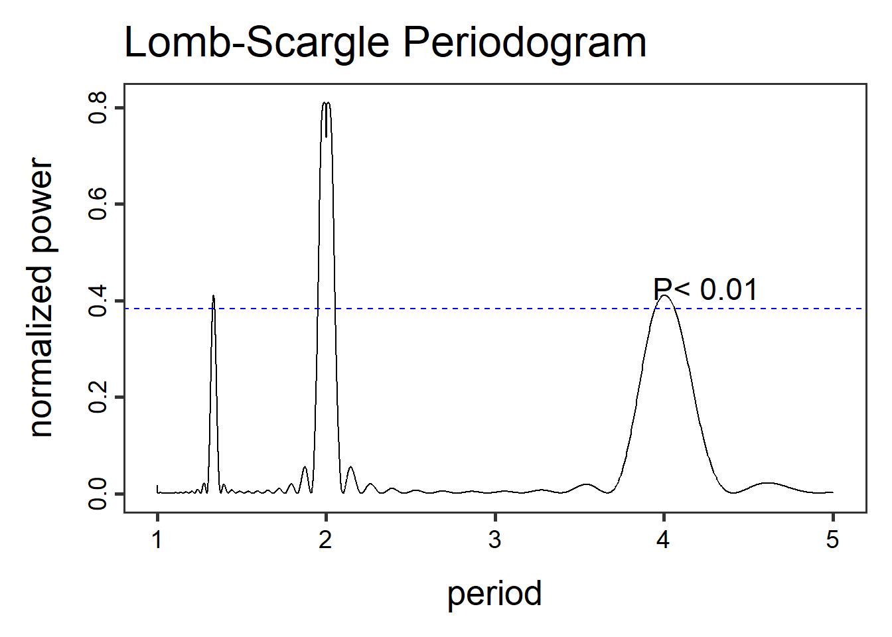

Μελέτη εποχικότητας
Κώστας Κούδας
2025-03-20
1 Εντοπισμός εποχικότητας
Σε προηγούμενη ενότητα αναφέρθηκε η έννοια της εποχικότητας. Εδώ θα εμβαθύνουμε λίγο παραπάνω.
Από το Google Trends κατεβάσαμε το αρχείο massExt.csv, το οποίο περιέχει το πλήθος των «γκουγκλαρισμάτων» της φράσης «mass extinction» στις ΗΠΑ από 1/1/2004 έως και σήμερα 14/4/2024. Για την ακρίβεια, στο εν λόγω αρχείο δεν παρουσιάζεται ακριβώς το πλήθος, αλλά έχει αυτό κανονικοποηθεί ως προς τη μέγιστη τιμή του. Δηλαδή, αυτή ετέθη 100 και οτιδήποτε άλλο πάει συγκριτικά με αυτήν.
| Month | mass.extinction…United.States. |
|---|---|
| 2004-01 | 33 |
| 2004-02 | 48 |
| 2004-03 | 68 |
| 2004-04 | 49 |
| 2004-05 | 50 |
| 2004-06 | 0 |
| 2004-07 | 0 |
| 2004-08 | 0 |
| 2004-09 | 0 |
| 2004-10 | 0 |
| 2004-11 | 34 |
| 2004-12 | 27 |
| 2005-01 | 52 |
| 2005-02 | 43 |
| 2005-03 | 38 |
| 2005-04 | 42 |
| 2005-05 | 34 |
| 2005-06 | 32 |
| 2005-07 | 26 |
| 2005-08 | 16 |
| 2005-09 | 23 |
| 2005-10 | 37 |
| 2005-11 | 29 |
| 2005-12 | 34 |
| 2006-01 | 23 |
| 2006-02 | 38 |
| 2006-03 | 23 |
| 2006-04 | 39 |
| 2006-05 | 28 |
| 2006-06 | 24 |
| 2006-07 | 18 |
| 2006-08 | 0 |
| 2006-09 | 20 |
| 2006-10 | 19 |
| 2006-11 | 19 |
| 2006-12 | 18 |
| 2007-01 | 23 |
| 2007-02 | 27 |
| 2007-03 | 19 |
| 2007-04 | 28 |
| 2007-05 | 15 |
| 2007-06 | 18 |
| 2007-07 | 0 |
| 2007-08 | 8 |
| 2007-09 | 17 |
| 2007-10 | 22 |
| 2007-11 | 38 |
| 2007-12 | 30 |
| 2008-01 | 18 |
| 2008-02 | 26 |
| 2008-03 | 29 |
| 2008-04 | 41 |
| 2008-05 | 26 |
| 2008-06 | 16 |
| 2008-07 | 8 |
| 2008-08 | 8 |
| 2008-09 | 18 |
| 2008-10 | 20 |
| 2008-11 | 31 |
| 2008-12 | 26 |
| 2009-01 | 27 |
| 2009-02 | 35 |
| 2009-03 | 32 |
| 2009-04 | 37 |
| 2009-05 | 27 |
| 2009-06 | 13 |
| 2009-07 | 9 |
| 2009-08 | 7 |
| 2009-09 | 16 |
| 2009-10 | 20 |
| 2009-11 | 26 |
| 2009-12 | 25 |
| 2010-01 | 22 |
| 2010-02 | 33 |
| 2010-03 | 39 |
| 2010-04 | 38 |
| 2010-05 | 29 |
| 2010-06 | 12 |
| 2010-07 | 13 |
| 2010-08 | 10 |
| 2010-09 | 18 |
| 2010-10 | 19 |
| 2010-11 | 22 |
| 2010-12 | 24 |
| 2011-01 | 31 |
| 2011-02 | 29 |
| 2011-03 | 39 |
| 2011-04 | 40 |
| 2011-05 | 31 |
| 2011-06 | 23 |
| 2011-07 | 11 |
| 2011-08 | 9 |
| 2011-09 | 21 |
| 2011-10 | 26 |
| 2011-11 | 30 |
| 2011-12 | 26 |
| 2012-01 | 25 |
| 2012-02 | 31 |
| 2012-03 | 33 |
| 2012-04 | 40 |
| 2012-05 | 33 |
| 2012-06 | 13 |
| 2012-07 | 13 |
| 2012-08 | 9 |
| 2012-09 | 25 |
| 2012-10 | 27 |
| 2012-11 | 32 |
| 2012-12 | 33 |
| 2013-01 | 29 |
| 2013-02 | 37 |
| 2013-03 | 37 |
| 2013-04 | 46 |
| 2013-05 | 37 |
| 2013-06 | 15 |
| 2013-07 | 11 |
| 2013-08 | 14 |
| 2013-09 | 24 |
| 2013-10 | 35 |
| 2013-11 | 32 |
| 2013-12 | 31 |
| 2014-01 | 30 |
| 2014-02 | 49 |
| 2014-03 | 53 |
| 2014-04 | 58 |
| 2014-05 | 44 |
| 2014-06 | 24 |
| 2014-07 | 25 |
| 2014-08 | 17 |
| 2014-09 | 30 |
| 2014-10 | 45 |
| 2014-11 | 39 |
| 2014-12 | 43 |
| 2015-01 | 43 |
| 2015-02 | 57 |
| 2015-03 | 56 |
| 2015-04 | 59 |
| 2015-05 | 50 |
| 2015-06 | 74 |
| 2015-07 | 22 |
| 2015-08 | 19 |
| 2015-09 | 40 |
| 2015-10 | 48 |
| 2015-11 | 56 |
| 2015-12 | 53 |
| 2016-01 | 46 |
| 2016-02 | 58 |
| 2016-03 | 60 |
| 2016-04 | 64 |
| 2016-05 | 52 |
| 2016-06 | 21 |
| 2016-07 | 14 |
| 2016-08 | 14 |
| 2016-09 | 40 |
| 2016-10 | 48 |
| 2016-11 | 52 |
| 2016-12 | 50 |
| 2017-01 | 48 |
| 2017-02 | 61 |
| 2017-03 | 70 |
| 2017-04 | 68 |
| 2017-05 | 55 |
| 2017-06 | 22 |
| 2017-07 | 40 |
| 2017-08 | 21 |
| 2017-09 | 47 |
| 2017-10 | 55 |
| 2017-11 | 56 |
| 2017-12 | 44 |
| 2018-01 | 45 |
| 2018-02 | 64 |
| 2018-03 | 64 |
| 2018-04 | 72 |
| 2018-05 | 58 |
| 2018-06 | 26 |
| 2018-07 | 17 |
| 2018-08 | 22 |
| 2018-09 | 43 |
| 2018-10 | 61 |
| 2018-11 | 54 |
| 2018-12 | 51 |
| 2019-01 | 54 |
| 2019-02 | 75 |
| 2019-03 | 75 |
| 2019-04 | 73 |
| 2019-05 | 66 |
| 2019-06 | 25 |
| 2019-07 | 23 |
| 2019-08 | 28 |
| 2019-09 | 56 |
| 2019-10 | 61 |
| 2019-11 | 53 |
| 2019-12 | 44 |
| 2020-01 | 56 |
| 2020-02 | 67 |
| 2020-03 | 62 |
| 2020-04 | 65 |
| 2020-05 | 60 |
| 2020-06 | 28 |
| 2020-07 | 15 |
| 2020-08 | 24 |
| 2020-09 | 58 |
| 2020-10 | 55 |
| 2020-11 | 40 |
| 2020-12 | 43 |
| 2021-01 | 37 |
| 2021-02 | 43 |
| 2021-03 | 48 |
| 2021-04 | 49 |
| 2021-05 | 42 |
| 2021-06 | 23 |
| 2021-07 | 16 |
| 2021-08 | 16 |
| 2021-09 | 32 |
| 2021-10 | 33 |
| 2021-11 | 36 |
| 2021-12 | 33 |
| 2022-01 | 74 |
| 2022-02 | 52 |
| 2022-03 | 70 |
| 2022-04 | 100 |
| 2022-05 | 80 |
| 2022-06 | 30 |
| 2022-07 | 20 |
| 2022-08 | 25 |
| 2022-09 | 44 |
| 2022-10 | 50 |
| 2022-11 | 56 |
| 2022-12 | 57 |
| 2023-01 | 65 |
| 2023-02 | 76 |
| 2023-03 | 81 |
| 2023-04 | 77 |
| 2023-05 | 69 |
| 2023-06 | 26 |
| 2023-07 | 21 |
| 2023-08 | 26 |
| 2023-09 | 49 |
| 2023-10 | 73 |
| 2023-11 | 79 |
| 2023-12 | 70 |
| 2024-01 | 59 |
| 2024-02 | 83 |
| 2024-03 | 74 |
| 2024-04 | 75 |
Επίσης από το Statista κατεβάσαμε δεδομένα που αφορούν τους γάμους που έγιναν στην Ελλάδα από το 1980 έως και το 2022. Τα δεδομένα καταχωρήθηκαν στο αρχείο gamoi.xlsx, όπου η μία στήλη δίνει το έτος, η άλλη το πλήθος γάμων ανά 1000 άτομα και η τελευταία το πλήθος των γάμων γενικώς.
| Etos | GamoiAna1000 | GamoiSynolo |
|---|---|---|
| 1980 | 6.47 | 62352 |
| 1981 | 7.32 | 71178 |
| 1982 | 6.92 | 67784 |
| 1983 | 7.23 | 71143 |
| 1984 | 5.54 | 54793 |
| 1985 | 6.41 | 63709 |
| 1986 | 5.83 | 58091 |
| 1987 | 6.62 | 66166 |
| 1988 | 4.77 | 47873 |
| 1989 | 6.13 | 61884 |
| 1990 | 5.81 | 59052 |
| 1991 | 6.39 | 65568 |
| 1992 | 4.69 | 48631 |
| 1993 | 5.94 | 62195 |
| 1994 | 5.38 | 56813 |
| 1995 | 6.02 | 63987 |
| 1996 | 4.24 | 45408 |
| 1997 | 5.62 | 60535 |
| 1998 | 5.12 | 55489 |
| 1999 | 5.62 | 61165 |
| 2000 | 4.48 | 48880 |
| 2001 | 5.34 | 58491 |
| 2002 | 5.27 | 57872 |
| 2003 | 5.54 | 61081 |
| 2004 | 4.64 | 51377 |
| 2005 | 5.50 | 61043 |
| 2006 | 5.18 | 57802 |
| 2007 | 5.48 | 61377 |
| 2008 | 4.76 | 53500 |
| 2009 | 5.25 | 59212 |
| 2010 | 4.98 | 56338 |
| 2011 | 4.95 | 55099 |
| 2012 | 4.48 | 49705 |
| 2013 | 4.63 | 51256 |
| 2014 | 4.86 | 53105 |
| 2015 | 4.94 | 53672 |
| 2016 | 4.60 | 49632 |
| 2017 | 4.66 | 50138 |
| 2018 | 4.42 | 47428 |
| 2019 | 4.40 | 47137 |
| 2020 | 2.94 | 31475 |
| 2021 | 3.90 | 40759 |
| 2022 | NA | 43355 |
Κατόπιν εξάγουμε τις λίστες με τα δεδομένα που μας απασχολούν: τα γκουγκλαρίσματα και τους γάμους.
Παράλληλα με τα παραπάνω θα ασχοληθούμε και με μια κατασκευασμένη από
εμάς χρονοσειρά, την y:
Αυτή φτιάχτηκε να έχει ανοδική τάση (y <- x+...) και
εποχικότητα 6 μονάδων (4*cos( (2*pi/6) * x)), ελαφρώς
αλλοιωμένες από έναν θόρυβο (rnorm(100)). Παράλληλα εντός
της εμφανίζεται και μια κινητικότητα ανά 3 χρονικές μονάδες
(6*sin( (2*pi/3) * x)).
1.1 Χρονόγραμμα
Κάνουμε μια πρώτη απόπειρα αναπαράστασής τους. Δεν θα παραστήσουμε καν την ένδειξη του χρόνου, για να είμαστε τελείως απερίσπαστοι και να μην προκαταβάλουμε κάποια συμπεράσματα.
Παρατηρούμε μια κυκλική συμπεριφορά των γκουγκλαρισμάτων, δηλαδή ανά τακτά διαστήματα έχουμε κάποιες παρόμοιες αυξομοιώσεις. Ας δούμε τώρα και τους γάμους.
Αν εξαιρέσουμε την εμφανή πτωτική τάση προς το τέλος, εν γένει κι αυτοί εμφανίζουν μια εποχικότητα.
Τέλος, η δικιά μας η χρονοσειρά y έχει εμφανέστατη
εποχικότητα, όπως φαίνεται παρακάτω:
1.2 Διάγραμμα υστέρησης
Συνεχίζουμε με τα διαγράμματα υστέρησης, για να επιβεβαιώσουμε όσα υποψιαστήκαμε πριν.

Παρατηρούμε ότι το lag = 12 κείτεται επί της ευθείας \(y=x\), όπερ δείχνει ισχυρή συσχέτηση ανά 12 μονάδες του χρόνου, ήτοι μια εποχική επανάληψη ανά 12 χρονικές μονάδες.
Ας δούμε τι παίζει και με τους γάμους.

Εδώ φαίνεται να υπάρχει εποχικότητα ανά 4 χρονικές μονάδες, αλλά όχι τόσο εμφανής, όσο προηγουμένως. Παρατηρούμε επίσης και μια μετατόπιση του γραφήματος σιγά-σιγά κάτω από την \(y=x\), πράγμα που υποδηλώνει πτωτική τάση των γάμων. Άραγε, η κυκλική συμπεριφορά των γάμων ανά 4 έτη να αντικατοπτρίζει την προκατάληψη του πληθυσμού για τα δίσεκτα έτη, ως προς το ότι αυτά είναι «γρουσούζικα» για το γάμο;
Όσον αφορά την φτιαχτή από μας χρονοσειρά y τα πράγματα
είναι ακόμα πιο καθαρά. Αν στις δύο προηγούμενες περιπτώσεις πασχίζαμε
να εκλάβουμε ως ευθεία το γράφημα σε κάποιο lag, τώρα η ευθεία φαίνεται
ολοκάθαρα μπροστά μας στο lag = 6. Δηλαδή, είναι προφανής η εποχική
επανάληψη ανά 6 χρονικές μονάδες.

1.3 ∆ιάγραµµα αυτοσυσχέτισης
Τέλος θα σχεδιάσουμε το διάγραµµα αυτοσυσχέτισης από την κάθε περίπτωση. Αρχικά ερευνούμε τα γκουγκλαρίσματα.

Και πάλι παρατηρούμε ισχυρή αυτοσυσχέτιση ανά 12 χρονικές μονάδες.
Ας δοκιμάσουμε την ισχύ της διαίσθησής μας και στην περίπτωση των γάμων.
Ανά 4 μονάδες του χρόνου παρατηρείται ισχυρή συσχέτιση, άρα επανάληψη, η οποία όμως εξασθενεί στην πορεία του χρόνου, πιθανότατα λόγω της προαναφερθείσας πτωτικής τάσης.
Τέλος ας δούμε τι γίνεται και με την y.
Διακρίνουμε σίγουρα μια πτωτική τάση στην συσχέτιση της χρονοσειράς με τον… εαυτό της, πράγμα που αντανακλά την έντονη αυξητική τάση της. Η εποχικότητα εμφανίζεται ως στιγμιαίες ανυψώσεις ανά 6 lag.
2 Καταχώρηση χρονοσειράς βάσει διαπιστώσεων εποχικότητας
Στο σημείο αυτό είμαστε σε θέση να εισάγουμε τον χρόνο στις
χρονοσειρές μας. Θα ακολουθήσουμε τη γνωστή πορεία, με μία
διαφορά στην τιμή της παραμέτρου freq. Στην ενότητα Καταχώρηση
χρονοσειράς αναφέραμε ότι η freq είναι κατά το μάλλον ή
ήττον για να περιγράφουμε το χρόνο που εξελίσσεται η χρονοσειρά μας.
Στην πραγματικότητα η freq περιγράφει τον χρόνο ενός κύκλου
επανάληψης. Έτσι, αφού είδαμε ότι τα κουγκλαρίσματα επαναλαμβάνονται ανά
12 μήνες, θα γράψουμε:
Και αφού οι γάμοι παρουσιάζουν μια εποχική συμπεριφορά ανά 4 χρόνια, θα γράψουμε:
Τέλος, είναι εύλογο ότι η «χειροποίητη» χρονοσειρά y θα
καταχωρηθεί ως έχουσα freq=6.
3 Στατιστικός έλεγχος εποχικότητας.
Είδαμε παραπάνω δύο γραφικούς τρόπους εντοπισμού της εποχικότητας.
Τώρα θα δούμε έναν στατιστικό έλεγχο που θα μας επιβεβαιώνει τα όσα
είδαμε με τα μάτια μας. Προς τούτο θα χρειαστούμε το πακέτο
seastests, οπότε γράφουμε:
Έτσι, δεν έχουμε παρά να χρησιμοποιήσουμε τη συνάρτηση
isSeasonal(), στην οποία θα εκχωρήσουμε ως όρισμα τη
χρονοσειρά μας. Έτσι, αρχίζοντας με τα γκουγκλαρίσματα, θα γράψυμε:
## [1] TRUEώστε να δούμε αν υφίσταται 12-μηνη εποχικότητα
(freq=12). Και τελικά όντως υφίσταται, αφού εξήχθη απάντηση
TRUE. Εναλλακτικά από την παραπάνω γραφή, θα μπορούσαμε να
γράψουμε:
## [1] TRUEκαθόσον μέσα στη χρονοσειρά massExtts ενυπάρχει και η
πληροφορία για 12-μηνη συχνότητα.
Πάμε τώρα στους γάμους. Γράφουμε τα δύο παρακάτω ισοδύναμα πράγματα:
## [1] TRUE## [1] TRUEΚαι πάλι μας εξάγεται η απάντηση TRUE, άρα όντως και οι
γάμοι έχουν τετραετή εποχικότητα.
Τέλος, ας δούμε και την «προκάτ» χρονοσειρά y:
## [1] TRUE## [1] TRUEΓια άλλη μια φορά επιβεβαιώνεται η εποχική συμπεριφορά ανά 6 μονάδες του χρόνου.
Πριν πάμε στην επόμενη ενότητα αξίζει ν’ αναφέρουμε ότι ο παραπάνω στατιστικός έλεγχος δεν ανιχνεύει την ύπαρξη γενικώς κάποιας εποχικότητας, αλλά ελέγχει αν υφίσταται η συγκεκριμένη εποχικότητα. Έτσι, αν επί παραδείγματι γράψουμε:
## [1] FALSEη απάντηση είναι FALSE, δηλαδή ότι δεν υπάρχει καμία
εποχική συμπεριφορά ανά 7 μονάδες του χρόνου.
4 Άντληση περιοδικής συνιστώσας χρονοσειράς
Στο σημείο αυτό έχουμε την δυνατότητα να πράξουμε κάτι πραγματικά σπουδαίο! Έχουμε τη δυνατότητα να αναλύσουμε τη χρονοσειρά μας στα εξ ων συνετέθη. Θα την διασπάσουμε σε τρεις χρονοσειρές:
- μία συνιστώσα που να δείχνει καθαρά την τάση της,
- μία περιοδική συνιστώσα που να αντικατοπτρίζει αποκλειστικά την εποχική συμπεριφορά της,
- μία συνιστώσα θορύβου.
Αυτό θα γίνει με τη βοήθεια της συνάρτησης stl() ως
ακολούθως.
Σε αυτή την εικόνα:
- αρχικά παρουσιάζεται η αυθεντική χρονοσειρά μας
(
data), - ακολούθως η περιοδική συνιστώσα (
seasonal), - μετά η συνιστώσα τάσης (
trend) και - τέλος ο θόρυβος.
Αξίζει να παρατηρήσουμε την αύξουσα τάση των γκουγκλαρισμάτων. Να αντικατοπτρίζει άραγε αυτή μια απαισιόδοξη τάση της κοινωνίας;
Τώρα, αν θέλουμε να έχουμε πρόσβαση σε κάθε μία από τις συνιστώσες μπορούμε να χρησιμοποιήσουμε τις συναρτήσεις:
seasonalγια την εποχική συνιστώσα:

trendcycleγια τη συνιστώσα τάσης:

remainderγια τη συνιστώσα θορύβου:
Αυτά, όσον αφορά τα γκουγκλαρίσματα. Πάμε τώρα να δούμε τυς γάμους:

Η συνιστώσα τάσης δείχνει ολοκάθαρα πλέον μια καθαρή πτωτική συμπεριφορά των γάμων.
Τέλος, ας δούμε πως αποσυντίθεται και η χρονοσειρά που φτιάξαμε.
5 Ανάλυση περιοδικής χρονοσειράς
5.1 Περιοδόγραμμα Lomb-Scargle
Πριν μπούμε στο ψητό αυτής της ενότητας, θα πρέπει να δούμε κάποια πράγματα. Ας φανταστούμε, λοιπόν, ένα μέγεθος (π.χ. έναν πληθυσμό) το οποίο εξελίσσεται στην πάροδο του χρόνου. Ας υποθέσουμε επίσης ότι υπάρχει μια τιμή του (η θέση ισορροπίας), από την οποία όσο απομακρύνεται, τόσο πιο ισχυρά μια αόρατη δύναμη το «σπρώχνει» να επιστρέψει πίσω. Όταν συμβαίνει αυτό, το μέγεθος αυτό αυξομοιώνεται πάνω-κάτω από τη θέση ισορροπίας του:
Απομακρύνεται αρχικά από τη θέση ισορροπίας, άρα του ασκείται δύναμη επαναφοράς.
Η δύναμη επαναφοράς το σπρώχνει πίσω στη θέση ισορροπίας.
Λόγω κεκτημένης ταχύτητας προσπερνά τη θέση ισορροπίας και απομακρύνεται από αυτήν.
Αφού έχει απόσταση από τη θέση ισορροπίας, η δύναμη επαναφοράς το σπρώχνει πίσω.
κ.ο.κ.
Όλη αυτή η διαδικασία είναι περιοδική, δηλαδή επαναλαμβάνεται ανά τακτά διαστήματα.
Ας φανταστούμε τώρα ότι καθ’ όλη τη διάρκεια της κίνησής του αυτό μπορεί να εκτραπεί από την προβλεπόμενη θέση του κι ας υποθέσουμε πάλι ότι υπάρχει και μια άλλη αόρατη δύναμη, που προσπαθεί να το επαναφέρει στην προβλεπόμενη θέση. Κι αυτή τη φορά η δύναμη μεγαλώνει, όσο πιο μακριά είναι το μέγεθος από την προβλεπόμενη θέση. Και στην προκειμένη περίπτωση η διαδικασία είναι περιοδική, δηλαδή επαναλαμβάνεται ανά τακτά διαστήματα. Σε αυτή τη διαδικασία θα λέγαμε ότι υπάρχουν δύο κύκλοι επανάληψης:
ο αρχικός κύκλος πέριξ της θέσης ισορροπίας,
ο νέος κύκλος γύρω από την προβλεπόμενη θέση που θα έπρεπε να είναι, αν υφίστατο μόνο ο πρώτος κύκλος.
Ο εμπλουτισμός με τέτοιες ταλαντώσεις μπορεί να συνεχιστεί αυθαίρετα. Κι εδώ ανακύπτουν κάποια ερωτήματα. «Πώς μπορώ να βρω πόσο μεγάλοι είναι αυτοί οι κύκλοι;». «Ποιο πήγαινε-έλα έχει το πιο έντονα χαρακτηριστικά;»
Αυτά τα ερωτήματα έρχεται ν’ απαντήσει το περιοδόγραμμα Lomb-Scargle.
5.1.1 Γράφημα
Το περιοδόγραμμα Lomb-Scargle δείχνει πόσο ισχυρές είναι οι δυνάμεις του εκάστοτε κύκλου επαναφοράς. Συγκεκριμένα, αν και αυτό ίσως να μην απασχολεί τον μέσο αναγνώστη, δίνει το βαθμό ταύτισης της χρονοσειράς μας με μια λίστα ημιτονοειδών χρονοσειρών διαφόρων συχνοτήτων. Οι συγκρίσεις γίνονται μέσω του τεστ \(\chi^2\) (βλ. Έλεγχος χ2 για διακριτές κατανομές).
Τέλος πάντων, ας το δούμε και πρακτικά. Για να το φτιάξουμε θα
χρειαστούμε το πακέτο lomb:
Οπότε πάμε να δούμε τι συμβαίνει μα τα γκουγκλαρίσματα των μαζικών
καταστροφών. Η συνάρτηση που θα παράγει το εν λόγω περιοδόγραμμα είναι η
lsp():

Η προκαθορισμένη εκδοχή του περιοδογράμματος Lomb-Scargle εξάγει τις συχνότητες των ταλαντώσεων του φαινομένου. Εν προκειμένω η κυρίαρχη συχνότητα είναι περίπου 0.08 γκουγκλαρίσματα ανά χρονική μονάδα. Αχνοφαίνεται κι ένας υποδεέστερος κύκλος επανάληψης, συχνότητας 0.17 περίπου, αλλά αυτός είναι κάτω από τη μπλε γραμμή, η οποία υποδηλώνει το επίπεδο σημαντικότητας. Οι κορυφές των συχνοτήτων κάτω από αυτήν θεωρούνται αρκετά απίθανο να συνδέονται με κάποια δύναμη που να επιβάλλει κυκλική συμπεριφορά.
Κάποιος θα παρατηρούσε ότι υπάρχει και μια άλλη κορύφωση, κοντά στο
0. Γιατί την αγνοούμε; Στην πραγματικότητα αυτή η κορύφωση είναι ένα
σφάλμα που πρέπει να αγνοήσουμε και που οφείλεται στο ότι η χρονοσειρά
μας δεν ήταν εντελώς περιοδική, αλλά περιείχε τάσεις. Αν αυτές
απαλειφθούν, δηλαδή αν χρησιμοποιήσουμε τη SeasonalMassExt,
τότε θα δούμε ότι δεν υπάρχει πλέον τέτοια ένδειξη.

Τελικά, κρατώντας την αμιγώς περιοδική συνιστώσα της χρονοσειράς μας, βλέπουμε πως η δύναμη η επιβάλλουσα ταλάντωση συχνότητας 0.17 δεν είναι αξιοκαταφρόνητη. Θα την έχουμε στα υπ’ όψιν, λοιπόν.
Όμως, σε τι χρονικές μονάδες αυτό αντικατοπτρίζεται η συχνότητα 0.08,
που είναι η συχνότητα της ισχυρότερης δύναμης; Σε \(\frac{1}{0.08}\approx 12\), όπως είχαμε
βρει κι εμείς από τις άλλες περιπτώσεις. Αλλά ας το δούμε και πιο
«ετοιματζίδικα» χρησιμοποιώντας την παράμετρο type.

Εμφανίζεται η περίοδος πλέον. Το κομμάτι που φαίνεται να «απογειώνεται» στο τέλος δεν υποδεικνύει κάποια άλλη περίοδο, αλλά είναι αποτέλεσμα του ότι η χρονοσειρά μας δεν είναι εντελώς περιοδική. Είναι ακριβώς το ίδιο παραπλανητικό σφάλμα που συναντήσαμε και στην περίπτωση της συχνότητας. Αν εξαφανίσουμε πάλι κάθε τάση της και κρατήσουμε μόνο την περιοδικότητα, θα πάψει να εμφανίζεται αυτή η παραδοξότητα.

αλλά όχι πολύ καθαρά. Δεν είναι καθόλου προφανές ποια είναι αυτή.
Φαίνεται να είναι κάπου ανάμεσα στο 5 και στο 25, αλλά δεν είναι
ευδιάκριτο. Θα περιορίσουμε, λοιπόν, το περιοδόγραμμα εκεί
προσδιορίζοντας ανάλογα τις παραμέτρους from και
to:

Πλέον είναι φανερή η περιοδική συμπεριφορά ανά 12 περίπου χρονικές μονάδες. Επαναλαμβάνουμε ότι αυτό σημαίνει ότι μάλλον η χρονοσειρά μας διακατέχεται από μιαν επαναληπτικότητα της τάξης των 12 χρονικών μονάδων.
Ας δούμε τώρα κάποιες παραμέτρους ακόμα. Η μπλε διακεκομμένη γραμμή
δίνει, όπως είπαμε, το επίπεδο σημαντικότητας. Η προκαθορισμένη τιμή
είναι το 0.01, ήτοι ίσως αρκετά μικρή για έναν κοινωνικό επιστήμονα.
Μπορούμε να δοκιμάσουμε κάποια μεγαλύτερη, όπως την 0.05 πειράζοντας την
παράμετρο alpha ως ακολούθως.

Ο αναγνώστης ίσως να έχει παρατηρήσει την έντονα πολυγωνική μορφή του
περιοδοδιαγράμματος. Αυτό οφείλεται στο ότι έχουν γίνει συγκρίσεις της
χρονοσειράς μας με λίγες ημιτονοειδείς χρονοσειρές. Μπορούμε ν’
αυξήσουμε το πλήθος τους «παίζοντας» με την παράμετρο ofac.
Εδώ θα κάνουμε τη σύγκριση με 100 ημιτονοειδείς χρονοσειρές και θα
έχουμε έτσι ένα πιο λείο περιοδόγραμμα.

Ας κάνουμε μια παρόμοια μελέτη για τους γάμους.

Εδώ το περιοδόγραμμα αποτυγχάνει παταγωδώς να εκφράσει τη χρονοσειρά μας με τη βοήθεια ημιτονοειδών συναρτήσεων. Αυτό οφείλεται στο ότι οι γάμοι είχαν πολύ εντονότερες τάσεις από τα γκουγκλαρίσματα. Ας κρατήσουμε, λοιπόν, όπως προβλέπεται την περιοδική συνιστώσα τους.

Οπότε έχουμε:

Καθόλου κατατοπιστικό περιοδογράφημα, ομολογουμένως. Επιχειρούμε,
λοιπόν, μια εκλέπτυνσή του (ofac=100) και την μετατροπή του
σε μελετητή περιόδων κι όχι συχνοτήτων
(type = "period").

Όχι πολύ καλύτερα. Ας ζουμάρουμε λίγο παραπάνω
(from=1, to=5), μήπως δούμε κάτι καλύτερο.

Τελικά αυτό που φαινόταν σαν σφάλμα είναι απολύτως υπαρκτές περίοδοι κυκλικών συμπεριφορών. Το πρόβλημα είναι, ότι, ειδικά για την πρώτη, δεν βλέπουμε ποιες ακριβώς είναι. Αυτό θα εξεταστεί στην επόμενη ενότητα.
Κλείνοντας, παραθέτουμε το περιοδόγραμμα και της φτιαχτής εξ ημών
χρονοσειράς y. Για την ακρίβεια, της περιοδικής της
συνιστώσας.

Πέραν από τις περιόδους 3 και 6 που είχαμε εμείς επιβάλλει στην
χρονοσειρά μας, εντοπίζονται και κάποιες άλλες μικρότερες. Αυτό ίσως να
οφείλεται στο ότι είχαμε βάλει αρκετά ισχυρό θόρυβο στην κατασκευή της
y, οπότε η stl() αδυνατούσε να ανακατασκευάσει
πιστά την περιοδική συνιστώσα που είχαμε κρύψει μέσα της.
5.1.2 Προσδιορισμός περιόδου και συχνότητας
Στην υπονενότητα αυτή θα χρησιμοποιήσουμε το περιοδόγραμμα για να
εντοπίζουμε την περίοδο. Τη δουλειά αυτή θα την κάνει η συνάρτηση
prosdiorismosPerSyxn().
prosdiorismosPerSyxn <- function(dedomena, apo = NULL, eos = NULL){
periodogramma <- lsp(dedomena, times = NULL, from = apo, to = eos, type = "period",
ofac = 130, alpha = 0.01, normalize="press", plot = FALSE)
per <- periodogramma$peak.at[1]
syxn <- periodogramma$peak.at[2]
Period <- c(per)
Frequency <- c(syxn)
data.frame(Period,Frequency)
}Έχουμε, συνεπώς, για τα γκουγκλαρίσματα:
## Period Frequency
## 1 11.99772 0.08334916Προκύπτει, ως φαίνεται, ότι η ισχυρότερη δύναμη που τα εξαναγκάζει σε περιοδική συμπεριφορά είναι αυτή που τους επιβάλλει κυκλική συμπεριφορά 12 περίπου χρονικών μονάδων.
Ας δούμε όμως και την άλλη περίοδο-συχνότητα που εντοπίσαμε στο
περιοδογράφημα. Εδώ θα περιορίσουμε την αναζήτηση περιόδων-συχνοτήτων
στο χρονικό διάστημα 4 έως 10 (apo=4, eos=10). Δηλαδή θα
αναζητήσουμε περιόδους επανάληψης στο διάστημα [4,10] και, μαζί με
αυτές, θα εξαχθούν και οι αντίστοιχες συχνότητες.
## Period Frequency
## 1 6.00114 0.166635Βλέπουμε μια κυκλική συμπεριφορά ανά 6 περίπου χρονικές μονάδες. Γιατί άραγε; Μήπως τελικά αυτή η κυκλική συμπεριφορά των γκουγκλαρισμάτων για μαζικές καταστροφές οφείλεται στο ότι κάθε 6 μήνες οι φοιτητές δίνουν εξετάσεις, άρα αυξάνεται τότε η ερευνητική δραστηριότητα;
Ας δούμε και με τους γάμους, τώρα τι γίνεται.
## Period Frequency
## 1 1.9869 0.5032967Βλέπουμε πως η ισχυρότερη δύναμη είναι αυτή που επιβάλλει ταλάντωση 2 χρονικών μονάδων. Επειδή όμως είδαμε από το περιοδόγραμμα και κάποιες άλλες περιόδους, θα το ψάξουμε λίγο βαθύτερα:
## Period Frequency
## 1 1.333008 0.7501832Έτσι, εντοπίζουμε περίοδο της τάξης του 1.33. Αυτό είναι πρόβλημα, καθόσον θα έπρεπε να καταλήξουμε σε περίοδο που να μην μπλοκάρει την περιοδική συμπεριφορά ανά 4 χρονικές μονάδες, η οποία είναι το χρονικό διάστημα που όλα επαναλαμβάνονται ξανά. Ίσως το 1.33 να είναι στην πραγματικότητα το \(\frac{4}{3}\), οπότε έτσι δεν έχουμε πρόβλημα, μιας και η περιοδική συμπεριφορά \(\frac{4}{3}\) μονάδων ολοκληρώνεται στο χρονικό διάστημα [0, 4] μετά από 12 επαναλήψεις.
ενώ γράφοντας εντοπίζουμε επιπλέον περίοδο της τάξης των 4 χρονικών μονάδων.
## Period Frequency
## 1 4.002933 0.24981685.2 Προσέγγιση περιοδικής χρονοσειράς με σειρά Fourier
Θα μπορούσαν τα παραπάνω να χρησιμεύσουν στο να μοντελοποιήσουμε την περιοδική χρονοσειρά μας; Η απάντηση είναι καταφατική κι αυτό θα γίνει εδώ. Θα προσπαθήσουμε να εκφράσουμε κάθε περιοδική χρονοσειρά που έχουμε με την ως άθροισμα ημιτονοειδών συναρτήσεων (\(\sin()\) και \(\cos()\)), δηλαδή ως σειρά Fourier.
Γιατί όμως σειρά Fourier; Διότι οι ταλαντώσεις που έχουμε αναφέρει
περιγράφονται με τις συναρτήσεις «ημίτονο» και «συνημίτονο». Τη δουλειά
αυτή θα κάνει η συνάρτηση seiraFourier(📋📋📋,🌒🌒🌒),
όπου:
📋📋📋οι τιμές της χρονοσεράς μας,🌒🌒🌒μια λίστα με τις περιόδους των ταλαντώσεων.
Ακολουθεί η κατασκευή της εν λόγω συνάρτησης.
seiraFourier <- function(dedomena, listPeriod){
t <- 1:length(dedomena)
n <- length(listPeriod)
T <- listPeriod[1]
seira <- paste(c("I(sin(2*pi*t/",T,"))+I(cos(2*pi*t/",T,"))"), collapse="")
if (n>1) {
for (i in 2:n) {
T <- listPeriod[i]
orosN <- paste(c("I(sin(2*pi*t/",T,"))+I(cos(2*pi*t/",T,"))"), collapse="")
seira <- paste(c(seira,orosN), collapse="+")
}
}
formula_string <- paste("dedomena ~", seira)
lm_model <- lm(as.formula(formula_string))
lm_model
}Έτσι, αφού τα γκουγκλαρίσματα έχουν περιόδους 6 και 12 χρονικών μονάδων, έχουμε:
##
## Call:
## lm(formula = as.formula(formula_string))
##
## Coefficients:
## (Intercept) I(sin(2 * pi * t/6)) I(cos(2 * pi * t/6)) I(sin(2 * pi * t/12))
## -0.0002849 -8.3567745 -4.5117178 12.8772886
## I(cos(2 * pi * t/12))
## 6.6012389Επομένως, η περιοδική συνστώσα των γκουγκλαρισμάτων μοντελοποιείται με την κάτωθι συνάρτηση:
\[-0.0002849-8.3567745\sin\left(\frac{2\pi}{6}t\right)-4.5117178\cos\left(\frac{2\pi}{6}t\right)+12.8772886\sin\left(\frac{2\pi}{12}t\right)+6.6012389\cos\left(\frac{2\pi}{12}t\right)\]
όπου \(t\) είναι οι χρονικές μονάδες από την έναρξη της παρατήρησης. Ας δούμε γραφικά πόσο καλή προσέγγιση επιτυγχάνει το μοντέλο μας.
plot(1:length(SeasonalMassExt),SeasonalMassExt, type = "l")
curve(-0.0002849-8.3567745*sin(2 * pi * x/6)-4.5117178*cos(2 * pi * x/6)+12.8772886*sin(2 * pi * x/12)+6.6012389*cos(2 * pi * x/12), add = TRUE, col = "red", n=10000)
Ας δούμε τώρα και την περίπτωση των γάμων.
##
## Call:
## lm(formula = as.formula(formula_string))
##
## Coefficients:
## (Intercept) I(sin(2 * pi * t/1.33333333333333))
## -4.972e-04 3.854e+03
## I(cos(2 * pi * t/1.33333333333333)) I(sin(2 * pi * t/2))
## 1.209e+03 5.708e+03
## I(cos(2 * pi * t/2)) I(sin(2 * pi * t/4))
## 3.414e+03 NA
## I(cos(2 * pi * t/4))
## NAΤα NA δηλώνουν ότι δεν έχουμε επαρκή δεδομένα για να
συμπεριλάβουμε τους όρους \(\sin\left(\frac{2\pi}{4}t\right)\) και
\(\cos\left(\frac{2\pi}{4}t\right)\)
μαζί με τους άλλους. Γράφουμε:
##
## Call:
## lm(formula = as.formula(formula_string))
##
## Coefficients:
## (Intercept) I(sin(2 * pi * t/2)) I(cos(2 * pi * t/2)) I(sin(2 * pi * t/4))
## -4.972e-04 -6.927e+02 3.414e+03 -3.854e+03
## I(cos(2 * pi * t/4))
## 1.209e+03Οπότε έχουμε το μοντέλο:
\[-692.7\sin\left(\frac{2\pi}{2}t\right)+3414\cos\left(\frac{2\pi}{2}t\right)-3854\sin\left(\frac{2\pi}{4}t\right)+1209\cos\left(\frac{2\pi}{4}t\right)\]
Πάμε να εξετάσουμε την πιστότητα του μοντέλου μας γραφικά και βλέπουμε ότι αυτή είναι πολύ καλή.
plot(1:length(gamoiSynolotsCompSeasonal),gamoiSynolotsCompSeasonal, type= "l")
curve(-3854*sin(2 * pi * x/4)+1209*cos(2 * pi * x/4)-692.7*sin(2 * pi * x/2)+3414*cos(2 * pi * x/2), add = TRUE, col = "red", n=10000)
Ας δοκιμάσουμε την τύχη μας με άλλους συνδυασμούς περιόδων.
##
## Call:
## lm(formula = as.formula(formula_string))
##
## Coefficients:
## (Intercept) I(sin(2 * pi * t/1.33333333333333))
## -4.972e-04 3.854e+03
## I(cos(2 * pi * t/1.33333333333333)) I(sin(2 * pi * t/2))
## 1.209e+03 5.708e+03
## I(cos(2 * pi * t/2))
## 3.414e+03Οπότε έχουμε το μοντέλο:
\[3854\sin\left(\frac{2\pi}{4/3}t\right)+1209\cos\left(\frac{2\pi}{4/3}t\right)+5708\sin\left(\frac{2\pi}{2}t\right)+3414\cos\left(\frac{2\pi}{2}t\right)\]
Ας δούμε και τώρα την οπτική επαλήθευση της πιστότητας του μοντέλου μας.
plot(1:length(gamoiSynolotsCompSeasonal),gamoiSynolotsCompSeasonal, type= "l")
curve(3854*sin(2 * pi * x/(4/3))+1209*cos(2 * pi * x/(4/3))+5708*sin(2 * pi * x/2)+3414*cos(2 * pi * x/2), add = TRUE, col = "red", n=10000)
Καμία σχέση με όσα βλέπουμε. Άρα κρατάμε την πρώτη μοντελοποίηση.
Για την εμπέδωση των παραπάνω, αλλά και για να δούμε τα όρια των
δυνατοτήτων των μεθόδων που ασχοληθήκαμε, θα εξάγουμε και τη σειρά
Fourier της περιοδικής συνιστώσας της σειράς y που
φτιάξαμε.
##
## Call:
## lm(formula = as.formula(formula_string))
##
## Coefficients:
## (Intercept) I(sin(2 * pi * t/3)) I(cos(2 * pi * t/3)) I(sin(2 * pi * t/6))
## 1.212e-08 6.156e+00 1.712e-01 3.390e-02
## I(cos(2 * pi * t/6))
## -4.038e+00Οπότε έχουμε το μοντέλο:
\[6.008\sin\left(\frac{2\pi}{3}t\right)-0.094\cos\left(\frac{2\pi}{3}t\right)+0.214\sin\left(\frac{2\pi}{6}t\right)-3.950\cos\left(\frac{2\pi}{6}t\right)\]
το οποίο δεν έχει και μεγάλη απόκλιση από αυτό που είχαμε φτιάξει εμείς αρχικά:
\[6\sin\left(\frac{2\pi}{3}t\right)-4\cos\left(\frac{2\pi}{6}t\right).\]
Ο κώδικας που γράψαμε συνολικά ήταν:
massExt <- massExtDF$mass.extinction...United.States.
gamoiSynolo <- gamoi$GamoiSynolo
x <- 1:100
y <- x+6*sin( (2*pi/3) * x)-4*cos( (2*pi/6) * x)+rnorm(100)
plot(massExt, type ="l")
plot(gamoiSynolo, type ="l")
plot(y, type ="l")
if(!require(forecast)){
install.packages("forecast")
library(forecast)
}
gglagplot(massExt, continuous = TRUE, set.lags = 2*(1:10))
gglagplot(gamoiSynolo, continuous = TRUE, set.lags = 2*(1:10))
gglagplot(y, continuous = TRUE, set.lags = 2*(1:10))
acf(massExt)
acf(gamoiSynolo)
acf(y)
massExtts <- ts(massExtDF$mass.extinction...United.States., start = c(2004, 1), freq=12)
gamoiSynolots <- ts(gamoi$GamoiSynolo, start = 0, freq=4)
yTs <- ts(y, start = 0, frequency = 6)
if(!require(seastests)){
install.packages("seastests")
library(seastests)
}
isSeasonal(massExt, freq=12)
isSeasonal(massExtts)
isSeasonal(gamoiSynolo, freq=4)
isSeasonal(gamoiSynolots)
isSeasonal(y, freq=6)
isSeasonal(yTs)
isSeasonal(y, freq=7)
massExttsComp <- stl(massExtts, s.window = "periodic")
plot(massExttsComp)
SeasonalMassExt <- seasonal(massExttsComp)
plot(SeasonalMassExt)
TrendMassExt <- trendcycle(massExttsComp)
plot(TrendMassExt)
RemainderMassExt <- remainder(massExttsComp)
plot(RemainderMassExt)
gamoiSynolotsComp <- stl(gamoiSynolots, s.window = "periodic")
plot(gamoiSynolotsComp)
yTsComp <- stl(yTs, s.window = "periodic")
plot(yTsComp)
if(!require(lomb)){
install.packages("lomb")
library(lomb)
}
lsp(massExt)
lsp(SeasonalMassExt)
lsp(massExt, type = "period")
lsp(SeasonalMassExt,type = "period")
lsp(SeasonalMassExt, from = 5, to = 25, type = "period")
lsp(SeasonalMassExt, from = 5, to = 25, type = "period", alpha = 0.05)
lsp(SeasonalMassExt, from = 5, to = 25, type = "period",
ofac = 100, alpha = 0.05)
lsp(gamoiSynolo)
gamoiSynolotsCompSeasonal <- seasonal(gamoiSynolotsComp)
plot(gamoiSynolotsCompSeasonal)
lsp(gamoiSynolotsCompSeasonal)
lsp(gamoiSynolotsCompSeasonal, ofac=100, type = "period")
lsp(gamoiSynolotsCompSeasonal, ofac=100, type = "period", from=1, to=5)
yTsCompSeasonal <- seasonal(yTsComp)
lsp(yTsCompSeasonal, ofac=100, type = "period", from=1, to=8)
prosdiorismosPerSyxn <- function(dedomena, apo = NULL, eos = NULL){
periodogramma <- lsp(dedomena, times = NULL, from = apo, to = eos, type = "period",
ofac = 130, alpha = 0.01, normalize="press", plot = FALSE)
per <- periodogramma$peak.at[1]
syxn <- periodogramma$peak.at[2]
Period <- c(per)
Frequency <- c(syxn)
data.frame(Period,Frequency)
}
prosdiorismosPerSyxn(SeasonalMassExt)
prosdiorismosPerSyxn(SeasonalMassExt, apo=4, eos=10)
prosdiorismosPerSyxn(gamoiSynolotsCompSeasonal)
prosdiorismosPerSyxn(gamoiSynolotsCompSeasonal, apo=1, eos=1.5)
prosdiorismosPerSyxn(gamoiSynolotsCompSeasonal, 3, 5)
seiraFourier <- function(dedomena, listPeriod){
t <- 1:length(dedomena)
n <- length(listPeriod)
T <- listPeriod[1]
seira <- paste(c("I(sin(2*pi*t/",T,"))+I(cos(2*pi*t/",T,"))"), collapse="")
if (n>1) {
for (i in 2:n) {
T <- listPeriod[i]
orosN <- paste(c("I(sin(2*pi*t/",T,"))+I(cos(2*pi*t/",T,"))"), collapse="")
seira <- paste(c(seira,orosN), collapse="+")
}
}
formula_string <- paste("dedomena ~", seira)
lm_model <- lm(as.formula(formula_string))
lm_model
}
seiraFourier(SeasonalMassExt,c(6,12))
plot(1:length(SeasonalMassExt),SeasonalMassExt)
curve(-0.0002849-8.3567745*sin(2 * pi * x/6)-4.5117178*cos(2 * pi * x/6)+12.8772886*sin(2 * pi * x/12)+6.6012389*cos(2 * pi * x/12), add = TRUE, col = "red", n=10000)
seiraFourier(gamoiSynolotsCompSeasonal,c(4/3,2,4))
seiraFourier(gamoiSynolotsCompSeasonal,c(4/3,2))
plot(1:length(gamoiSynolotsCompSeasonal),gamoiSynolotsCompSeasonal)
curve(3854*sin(2 * pi * x/(4/3))+1209*cos(2 * pi * x/(4/3))+5708*sin(2 * pi * x/2)+3414*cos(2 * pi * x/2), add = TRUE, col = "red", n=10000)
seiraFourier(seasonal(yTsComp),c(3,6))